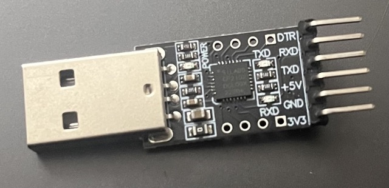
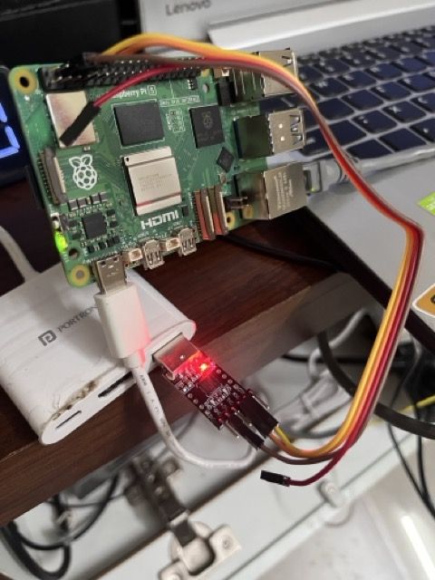

Rasp Pi Serial Console
While working on photos. I plugged in rasp pi to ethernet but it didn’t come up in any network scan.
Simplest is to get an HDMI monitor and see what’s going on, but alas! Rasp pi changed their HDMI from mini to micro, and I only have a mini adapter from pi zero.
Thankfully, I keep a USB to UART for these situations.
Documentation says that UART should be on GPIO 14 and 15.

I wonder if I should connect the 3.3V/5V pins on my UART bridge at all ? I asked perplexity and it said no. Sounds right because the bridge is getting power from USB and rasp pi is already powered.

Find the UART device numbers⌗
; ls /dev > before
; ls /dev > after
; comm -3 before after
cu.usbserial-0001
tty.usbserial-0001Still not working.
; picocom -b 115200 /dev/tty.usbserial-0001
picocom v3.1
port is : /dev/tty.usbserial-0001
flowcontrol : none
baudrate is : 115200
parity is : none
databits are : 8
stopbits are : 1
escape is : C-a
local echo is : no
noinit is : no
noreset is : no
hangup is : no
nolock is : no
send_cmd is : sz -vv
receive_cmd is : rz -vv -E
imap is :
omap is :
emap is : crcrlf,delbs,
logfile is : none
initstring : none
exit_after is : not set
exit is : no
Type [C-a] [C-h] to see available commands
Terminal readynothing happens.
Now I doubt if I enabled the serial console in rasp pi config. Take out sdcard, plug it in on my mac.
My mac cannot mount ext4 😫
/dev/disk6 (internal, physical):
#: TYPE NAME SIZE IDENTIFIER
0: FDisk_partition_scheme *126.4 GB disk6
1: Windows_FAT_32 NO NAME 134.2 MB disk6s1
2: Linux 126.3 GB disk6s2
; sudo file -s /dev/disk6s2
/dev/disk6s2: Linux rev 1.0 ext4 filesystem data, UUID=753de8f8-52e4-4d85-94b7-adad5d75b8b8 (needs journal recovery) (extents) (64bit) (large files) (huge files)
; sudo mount -t ext4 /dev/disk6s2 ~/mnt
mount: exec /Library/Filesystems/ext4.fs/Contents/Resources/mount_ext4 for /Users/neo/mnt: No such file or directoryTime to power up my Linux.
My /boot/config.txt had enable_uart=0. Probably this is the reason uart is not working.
Note: You need to mount boot partition on mountpoint/boot/firmware and root partition at mountpoint/boot. Only boot partition is required anyway.
Looks like rasp pi 5 has a dedicated uart.
As per this and this I need to explicitly enable uart0 as default uart is debug uart on 3 pin dedicated header (ie not on pin 14 and 15).
dtparam=uart0_console # Enable UART0/ttyAMA0 on GPIO 14 & 15 and make it the console UARTconsole=serial0,115200Showed me a startup output !! but no input yet !
Terminal ready
[ 0.000000] Booting Linux on physical CPU 0x0000000000 [0x414fd0b1]
[ 0.000000] Linux version 6.6.31+rpt-rpi-2712 (serge@raspberrypi.com) (gcc-12 (Debian 12.2.0-14) 12.2.0, GNU ld (GNU Binutils for Debian) 2.40) #1 SMP PREEMPT Debian 1:6.6.31-1+rpt1 (2024-05-29)
[ 0.000000] KASLR enabled
[ 0.000000] random: crng init done
[ 0.000000] Machine model: Raspberry Pi 5 Model B Rev 1.0
[ 0.000000] efi: UEFI not found.
...
[ 3.399570] systemd[1]: Mounted sys-kernel-tracing.mount - Kernel Trace File System.
[ 3.408185] systemd[1]: Finished fake-hwclock.service - Restore / save the current clock.
[ 3.416587] systemd[1]: Started systemd-journald.service - Journal Service.I also saw a /boot/dietpi-wifi.txt file, so lets put in the wifi creds there.
On serial console, it shows:
─────────────────────────────────────────────────────
DietPi v9.6.1 : 08:32 - Thu 08/21/25
─────────────────────────────────────────────────────
- LAN IP : 192.168.1.254 (wlan0)
Please hit <return> to loginAlthough nothing happens when I hit return. Anyway, I can see its connected to the wifi. So, ssh should work.
And yes! it does.
; ssh dietpi@192.168.1.254
dietpi@192.168.1.254's password:
Linux DietPi 6.6.31+rpt-rpi-2712 #1 SMP PREEMPT Debian 1:6.6.31-1+rpt1 (2024-05-29) aarch64Q: So why didn’t it show up on ethernet scan then ?
A: hotplug was disabled for ethernet. Might’ve worked if I booted rasp pi with ethernet cable connected.
Via ssh I can see that serial-getty is disabled on serial0.
○ serial-getty@serial0.service - Serial Getty on serial0
Loaded: loaded (/lib/systemd/system/serial-getty@.service; disabled; preset: enabled)
Active: inactive (dead)
Docs: man:agetty(8)
man:systemd-getty-generator(8)
https://0pointer.de/blog/projects/serial-console.html
dietpi@DietPi:~$ sudo systemctl start serial-getty@serial0After enabling it, I’ve the console on my UART:
─────────────────────────────────────────────────────
DietPi v9.6.1 : 08:32 - Thu 08/21/25
─────────────────────────────────────────────────────
- LAN IP : 192.168.1.254 (wlan0)
Please hit <return> to login
Debian GNU/Linux 12 DietPi ttyAMA0
DietPi login: dietpi
Password:
Linux DietPi 6.6.31+rpt-rpi-2712 #1 SMP PREEMPT Debian 1:6.6.31-1+rpt1 (2024-05-29) aarch64
I would’ve saved some headache if login shell was enabled.
I must’ve disabled serial on first boot, note to self: keep CONFIG_SERIAL_CONSOLE_ENABLE=1 turned on.
After system upgrade⌗
Turns out, I could’ve only enabled serial-getty@ttyAMA0.service and
set console=ttyAMA0,115200 in cmdline.txt
dietpi@DietPi:~$ sudo systemctl start serial-getty@ttyAMA0.service
Failed to start serial-getty@ttyAMA0.service: Unit serial-getty@ttyAMA0.service is masked.
dietpi@DietPi:~$ sudo systemctl unmask serial-getty@ttyAMA0.service
Removed "/etc/systemd/system/serial-getty@ttyAMA0.service".
dietpi@DietPi:~$ sudo systemctl start serial-getty@ttyAMA0.service
dietpi@DietPi:~$ sudo systemctl enable serial-getty@ttyAMA0.service
Created symlink /etc/systemd/system/getty.target.wants/serial-getty@ttyAMA0.service → /etc/systemd/system/serial-getty@.service.Q: So, why dtparam=uart0 was required earlier but not now ?
A: because new firmwares have fallback - if debug uart is not connected, it falls back to uart0 on GPIO 14/15
Raspberry OS bug⌗
I stumbled upon a slight frustration.
Usually, serial0 -> ttyAMA0 mapped by the OS to abstract hardware specific names.
However, I wrote console=serial0,115200 in cmdline.txt, it showed ttyAMA0 in dmesg
dietpi@DietPi:~$ dmesg | grep uart
[ 0.000000] Kernel command line: reboot=w coherent_pool=1M 8250.nr_uarts=1 pci=pcie_bus_safe cgroup_disable=memory numa_policy=interleave nvme.max_host_mem_size_mb=0 numa=fake=8 system_heap.max_order=0 smsc95xx.macaddr=2C:CF:67:66:EE:A5 vc_mem.mem_base=0x3fc00000 vc_mem.mem_size=0x40000000 root=PARTUUID=d1fb42d0-02 rootfstype=ext4 rootwait net.ifnames=0 logo.logo console=ttyAMA0,115200 console=tty1and /dev/serial0 is never created at all. So, enabling systemd for it doesn’t work, but works for /dev/ttyAMA0.
Turns out, it’s a bug in Raspberry OS and was present in dietpi at the time of writing this.
Summing up⌗
- config.txt:
enable_uart=1enables uart functionality - pis have multiple uarts. uart0 is pin 14 and 15.
- On Raspberry Pi 5 with Raspberry Pi OS Bookworm default uart is debug uart on 3 pin dedicated header
- config.txt: dtparam=uart0=on : enable UART0 on GPIO 14/15 and makes serial0 -> uart0
- config.txt: dtparam=uart0_console : uart0 is a console device
- Newer firmwares have fallback - if debug uart is not connected, it falls back to uart0 on GPIO 14/15, so above config.txt changes are not needed.
- cmdline.txt:
console=serial0,115200enables serial console on serial0 (serial0 -> uart0 -> GPIO 14/15) DietPi 6.12.34+rpt-rpi-2712does not have /dev/serial0 -> /dev/ttyAMA0 mapped, as seen in dmesg above. This is a bug.- systemctl enable serial-getty@ttyAMA0.service : enables serial console on ttyAMA0 ( serial0 -> uart0 == ttyAMA0 )
- Ideally, above line would be:
systemctl enable serial-getty@serial0.service - Use
picocominstead ofminicom